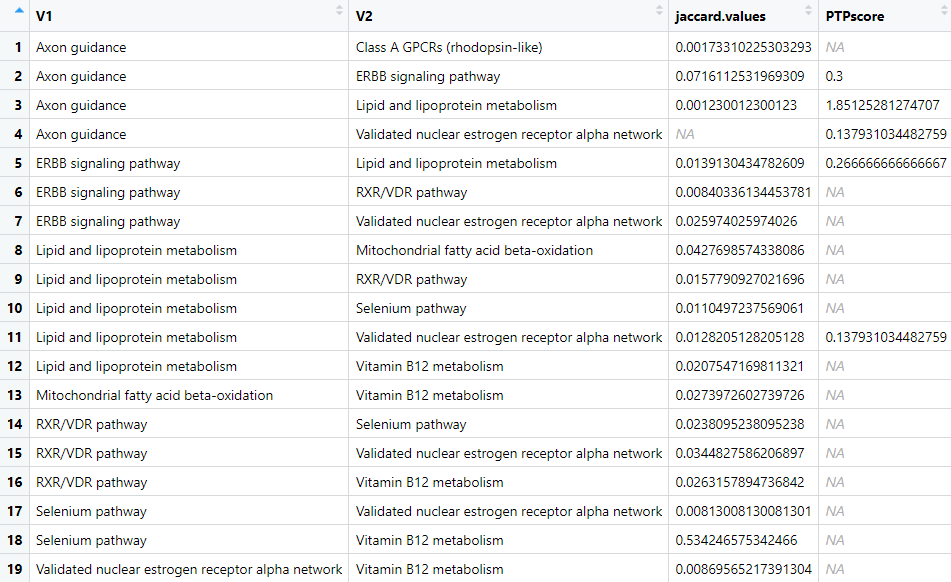

Finding Pathways from PTMs: An Analysis Guide
Nagashree Avabhrath, Mikhail Bailey, Mark Grimes, Madison Moffett, Grant Smith
PTMsToPathways.RmdThis Package
The PTMsToPathways package takes mass-spectrometry data of post-translational modifications under different experimental conditions and implicates pathways that are involved. These pathways are generated based on analysis of which ptms cluster together (based on the same environmental conditions) compared to how those proteins are known to interact.
An important note about this package: there are no returned outputs from any of the functions. All outputs listed are assigned to the Global Namespace in order to prevent loss of data and promote ease of use.
This File
This vignette is intended to be a step-by-step guide to walk users through the process of using the PTMsToPathways package. It includes an example pipeline demonstrating how to run the full analysis along with descriptions of each function. this pipeline must be run in order as subsequent steps require the data produced in previous steps. Estimated run-times are included with each description and are based on a preliminary dataset of ~9,000 post-translational modifications and 70 experimental conditions processed with a 12th Gen i5 processor and 8GB of RAM.
Starting Data
Below is an example of the input dataset:
#> Protein Mod Amino Acid H3122SEPTM.C1 H3122SEPTM.C2 H3122SEPTM.C3
#> 38 CTTN ack K107 19.23272 19.85052 19.58630
#> 39 CTTN ack K124 17.50665 19.73125 19.12403
#> 40 CTTN ack K161 NA NA NA
#> 41 CTTN ack K171 NA NA NA
#> 42 CTTN ack K198 20.53742 20.89560 20.04847
#> 43 CTTN ack K235 20.62203 20.74460 21.06424
#> 44 CTTN ack K272 NA NA NA
#> 45 CTTN ack K309 21.52164 21.03127 21.14289
#> 46 CTTN ack K87 19.61967 20.63351 20.49436
#> 47 CTTN p S156 21.09816 23.48837 22.33529
#> 48 CTTN p S405 NA NA NA
#> 49 CTTN p S417 NA 18.22809 18.97026
#> 50 CTTN p S418 NA 18.22809 18.97026Note that the rowname are not important and will not be used. The first column is the gene name associated with the protein. The second is the type of post-translational modification that occurred. The third column is the location of the post-translational modification. All of subsequent columns, regardless of how many there are, are the environmental conditions under which the post-translational modifications occurred. NAs – which are importantly not zeroes – represent condition-PTM combinations that were not studied while the numeric values are data output by the mass spectrometer.
Pipeline
Step 1: Make Cluster List
Code
MakeClusterList(ptmtable, name.columns = 1:3, keeplength = 2, correlation.matrix.name = "ptm.correlation.matrix", clusters.list.name = "clusters.list", tsne.coords.name = "all.tsne.coords", common.clusters.name = "common.clusters", toolong = 3.5)
Figure 1 Example plot produced by MakeClusterList
calculated using Euclidean Distance. The Euclidean Distance between
every PTM is calculated and that information is put into a large matrix.
This matrix is then condensed using t-SNE to get coordinates in
two-dimensional space, which is what our figure shows. These data points
– and the PTMs they represent – are put into clusters based on these
positions. This process is also undergone using Spearman Dissimilarity
and the average of Euclidean Distance and Spearman Dissimilarity.

Figure 2 Output of MakeClusterList. This data is read
as two rows: the top row represents the cluster number. This number
isn’t important in and of itself, it just differentiates between the
different clusters. The second row represents the size, or how many PTMs
are in that cluster.
#> $`1`
#> PTM.Name group
#> 1 AARS ubi K747 1
#> 2 ANAPC5 ubi K289 1
#> 3 CUTA ubi K112 1
#> 4 CYHR1 ubi K349 1
#> 5 EEF2 ack K498 1
#> 6 F11R ubi K97 1
#> 7 GMPS ack K9 1
#> 8 HERC2 ubi K20 1
#> 9 KPNB1 ubi K541 1
#> 10 LASP1 ubi K59 1
#> 11 LNPEP ubi K32 1
#> 12 MRPS27 ubi K94 1
#> 13 NME1 ack K39 1
#> 14 PCNA ubi K110 1
#> 15 PKM ack K141 1
#> 16 PLAU ubi K403 1
#> 17 PLK1 ubi K492 1
#> 18 PNPLA2 ubi K435 1
#> 19 PSMC1 ubi K237 1
#> 20 RBCK1 ubi K342 1
#> 21 RPS15A ubi K12 1
#> 22 TCAF1 ubi K817 1
#> 23 TUBB4B ubi K379; TUBB2A ubi K379; TUBB2B ubi K379 1
#> 24 UIMC1 ubi K245 1
#> 25 USP5 ubi K318 1
#> 26 VAMP7 ubi K125 1
#> 27 VCP ubi K295 1Figure 3 First cluster created by Euclidean Distance. The left column is the name of the PTM in this cluster. The right column is the cluster number.
Description
Make Cluster List is the first step in the analyzing one’s data. This function takes the post-translational modification table and runs it through three calculations of distance: Euclidean Distance, Spearman Dissimilarity (1 - |Spearman Correlation|), and the average of the two of these. These calculations find the ‘distance’ between ptms based upon under what conditions they occur. In other words, they found how dissimilar each pair of PTMs are. These matricies are then run through t-SNE in order to put them into a 3-dimensional space. Please note: t-SNE involves an element of randomness; in order to get the same results, set.seed(#) must be called. A correlation table is also produced based on the Spearman Correlation table.
Input
- ptmtable
- A data frame of post-translational modifications. Formatted with
numbered rows and the first column containing PTM names. The rest of the
column names should be drugs (experimental conditions). Values of the
table are numeric values that represent how much the PTM has reacted to
the drug or NA if that PTM wasn’t studied under that condition.
- A data frame of post-translational modifications. Formatted with
numbered rows and the first column containing PTM names. The rest of the
column names should be drugs (experimental conditions). Values of the
table are numeric values that represent how much the PTM has reacted to
the drug or NA if that PTM wasn’t studied under that condition.
- name.columns
- Numeric vector of the column number(s) containing the name or name components of the post-translational modification; defaults to 1:3
- keeplength
- MakeClusterList only saves subsets whose size is strictly greater than keeplength; defaults to 2
- example: [‘AARS’, ‘ABR’] will be discarded unless keeplength < 2
- correlation.matrix.name
- Desired name for the correlation matrix to be saved as; defaults to
ptm.correlation.matrix
- Desired name for the correlation matrix to be saved as; defaults to
ptm.correlation.matrix
- clusters.list.name
- Desired name for the lists of clusters to be saved as; defaults to
clusters.list
- Desired name for the lists of clusters to be saved as; defaults to
clusters.list
tsne.coords.name
common.clusters.name
- toolong
- Threshold for cluster separation; defaults to 3.5
Output
- ptm.correlation.matrix (or otherwise named by
correlation.matrix.name)
- A data frame showing the correlation between ptms (as the rows and
the columns). NAs are placed along the diagonal so as to not skew the
data with self-similarity
- A data frame showing the correlation between ptms (as the rows and
the columns). NAs are placed along the diagonal so as to not skew the
data with self-similarity
- clusters.list (or otherwise named by list.name)
- A list of three-dimensional data frames used to represent ptms in
space to show relationships between them based on distances. Based on
Euclidean Distance, Spearman Dissimilarity, and SED (the average between
the two)
- A list of three-dimensional data frames used to represent ptms in
space to show relationships between them based on distances. Based on
Euclidean Distance, Spearman Dissimilarity, and SED (the average between
the two)
all.tsne.coords (or otherwise named by tsne.coords.name)
common.clusters (or otherwise named by common.clusters.name)
Step 2: Make Correlation Network
Code
MakeCorrelationNetwork(common.clusters, ptm.correlation.matrix, ptm.cccn.name = "ptm.cccn", gene.cccn.name = "gene.cccn")
Figure 4 First 17 rows and columns of the cccn_matrix
produced by MakeCorrelationNetwork. PTMs that cluster together in all
three distance metrics have entries that represent how strongly they
correlate, or how alike their responses are under the same environment.
PTMs that don’t cluster in all three distance metrics are correlated by
a 0. Self-correlations are also marked by a 0 to prevent self-similarity
skewing.
Description
Make Correlation Network first finds the intersection between the Euclidian, Spearman, and SED cluster matrices in order to find the intersection between the three groups. It then adds the Genes in these PTMs to a list of common clusters and turns it into an adjacency matrix with two variants, one at the PTM level and one at the gene level. This adjacency matrix is used to filter relevant data — clusters — from the Spearman correlation matrix. The resultant cocluster correlation network shows strength of relationships between proteins using the common clusters between the three distance metrics.
Input
- clusterlist
- A list of three-dimensional data frames used to represent ptms in
space to show relationships between them based on distances. Based on
Euclidean Distance, Spearman Dissimilarity, and SED (the average between
the two)
- A list of three-dimensional data frames used to represent ptms in
space to show relationships between them based on distances. Based on
Euclidean Distance, Spearman Dissimilarity, and SED (the average between
the two)
- ptm.correlation.matrix
- A data frame showing the correlation between ptms (as the rows and
the columns). NAs are placed along the diagonal so as to not skew the
data with self-similarity.
- A data frame showing the correlation between ptms (as the rows and
the columns). NAs are placed along the diagonal so as to not skew the
data with self-similarity.
- clusters.name
- Desired name for the common clusters output; defaults to common.clusters
- filtered.ptm.cor.name
- Desired name for the correlation matrix that contains only PTMs found in common clusters
- cccn.name
- Desired name for the cocluster correlation network matrix; defaults to cccn.matrix
Output
- common.clusters (or otherwise named by common.clusters.name)
- The list of common clusters between all three distance metrics
(Euclidean, Spearman, and SED)
- The list of common clusters between all three distance metrics
(Euclidean, Spearman, and SED)
- cccn.matrix (or otherwise named by cccn.name)
- A matrix showing strength of relationships between proteins using common clusters between the three distance metrics
Step 3: Retrieve Database Edgefiles
Description
PPI (protein-protein interaction) databases are consulted in order to filter the clusters by proteins that are known to interact with each other as well as how strongly they are known to interact. The standard PPI database that is used is STRINGdb, and getting data from this database is the first step. This is accomplished with the function GetSTRINGdb. Please note, however, that the user may consult any database that they choose. After getting STRINGdb data (or not), the user runs MakeDBInput which produces a text file of all of their gene names. This information can be copy and pasted into any database that the user chooses in order to get other PPI networks. Step three is getting a GeneMANIA network, which is also optional but recommended. The user pastes their input data into GeneMANIA on the Cytoscape app and saves the edgefile and the nodetable. These files are then input into ProcessGMEdgefile in order to sort the data.
Note again that the database input can be used in any PPI database that the user chooses, though this package only explicitly supports STRINGdb and GeneMANIA. If another database is chosen, its file will have to be filtered manually by the user before moving on to step 4. The file should have three columns. Column one and two should strictly be labeled “Gene.1” and “Gene.2” in order to integrate with other PPI databases. The third column should contain the edgeweight and may be named however the user chooses. It is recommended, though, that the database is specified as well as the term ‘weight’ in the column name.
Part 1 — Get STRINGdb Data
Code
GetSTRINGdb(gene.cccn, stringdb.name = "stringdb.edges", nodenames.name = "nodenames")
Figure 5 First 18 rows of stringdb.edges produced by
GetSTRINGdb

Figure 6 First 18 rows of nodenames produced by
GetSTRINGdb
Input
- cccn.matrix
- A matrix showing strength of relationships between proteins using
the common clusters between the three distance metrics
- A matrix showing strength of relationships between proteins using
the common clusters between the three distance metrics
- stringdb.name
- Desired name for STRINGdb data; defaults to stringdb.edges
- Desired name for STRINGdb data; defaults to stringdb.edges
- nodenames.name
- Desired name for list of gene names; defaults to nodenames
Part 2 — Get File for Database Input
Code
MakeDBInput(gene.cccn, file.path.name = "db_nodes.txt")
Figure 7 First 15 lines from the produced text file
Input
- cccn.matrix
- A matrix showing strength of relationships between proteins using
the common clusters between the three distance metrics (Euclidean,
Spearman, and Combined (SED))
- A matrix showing strength of relationships between proteins using
the common clusters between the three distance metrics (Euclidean,
Spearman, and Combined (SED))
- file.path.name
- Desired path for file to be saved as; defaults to db_nodes.txt
Part 3 — Process GeneMANIA File
Code
ProcessGMEdgefile(gm.edgefile.path, gm.nodetable.path, db_nodes.path, gm.network.name = "gm.network")
Figure 8 First 44 rows of the GeneMANIA network
Input
- gm.edgefile.path
- Path to the GeneMANIA edgefile
- gm.nodetable.path
- Path to the GeneMANIA nodetable
- db_nodes.path
- Path to the nodenames file created in make_db_input
- gm.network.name
- Desired name for the output of the GeneMANIA network, defaults to gm.network
Step 4: Build PPI Network
Code
BuildPPINetwork(stringdb.edges = NA, gm.network = NA, db.filepaths = c(), ppi.network.name = "ppi.network")
Figure 9 First 19 rows of the ppi_network produced by
find_ppi_edges
Description
Note: Examples take about 5-10 minutes to run.
The purpose of BuildPPINetwork is to combine the data about desired protein-protein interactions from each of the provided databases. This package explicitly processes STRINGdb and GeneMANIA in Step 3, but the user may consult as many databases as desired (the processing for which is described in Step 3). BuildPPINetwork combines these databases as efficiently as possible while retaining desired edgeweights from each database. BuildPPINetwork also removes duplicate rows from the data frame.
Input
- stringdb.edges (produced optionally in step 3)
- Data frame of consisting of the network of interactions from the
genes of study pulled from the STRINGdb database; defaults to NA
- Data frame of consisting of the network of interactions from the
genes of study pulled from the STRINGdb database; defaults to NA
- gm.network (produced optionally in step 3)
- GeneMANIA network of protein-protein interactions from the genes of
study; defaults to NA
- GeneMANIA network of protein-protein interactions from the genes of
study; defaults to NA
- db.filepaths (produced optionally in step 3)
- A vector of paths to the additional ppi network files; defaults to
an empty vector
- A vector of paths to the additional ppi network files; defaults to
an empty vector
- ppi.network.name
- Desired name for the output protein-protein interaction network using all entered database input; defaults to ppi.network
Step 5: Cluster Filtered Network
Code
ClusterFilteredNetwork(gene.cccn, ppi.network, cfn.name = "cfn")
Figure 10 First 19 rows of the cfn produced by
ClusterFilteredNetwork
Description
Cluster Filtered Network checks all of the edges in the PPI network to see ensure that both of the genes are within our cocluster correlation network and that its weight is nonzero. If either of these conditions are not met, then it will be removed from the list of PPI edges. This new, cluster filtered network is then returned.
Input
- cccn.matrix
- A matrix showing strength of relationships between proteins using
the common clusters between the three distance metrics
- A matrix showing strength of relationships between proteins using
the common clusters between the three distance metrics
- ppi.network
- A dataframe representing how strongly proteins are known to
interact
- A dataframe representing how strongly proteins are known to
interact
- cfn.name
- Desired name for the output of ClusterFilteredNetwork; defaults to cfn
Step 6: Pathway Crosstalk Network
Code
PathwayCrosstalkNetwork(file = "bioplanet.csv", common.clusters, edgelist.name = "edgelist")
Figure 12 Graph in Cytoscape - Didn’t add cuz not good yet Will exist at some point
Description
Note: This step is directory sensitive. You can check and set your directory in R using getwd() and setwd(“yourdirectoryhere”) respectively. It needs a path to the bioplanet file and will put an edgelist file in your working directory, or getwd(). If you cannot find a file, please check your directories first.
Pathway Crosstalk Network is the final step in the pipeline. It requires input of an external database, bioplanet, which consists of groups of genes (proteins) involved in various cellular processes. The PCN turns this database into a list of pathways and converts those pathways into a pathway x pathway edgelist that possesses multiple weights, a jaccard similarity and a score derrived from Cluster-Pathway Evidence using common clusters found in Make Correlation Network.
Input
- file
- File path for the pathway data from Bioplanet (can also take in a
data frame that is formatted correctly like the one found in the data
directory, but this is not recommended as formatting must match sample
data exactly)
- File path for the pathway data from Bioplanet (can also take in a
data frame that is formatted correctly like the one found in the data
directory, but this is not recommended as formatting must match sample
data exactly)
- common.clusters
- The list of common clusters between all three distance metrics
(Euclidean, Spearman, and SED) made by MakeCorrelationNetwork
- The list of common clusters between all three distance metrics
(Euclidean, Spearman, and SED) made by MakeCorrelationNetwork
- edgelist.name
- Intended for use in Cytoscape.
- The desired name of the Pathway to Pathway edgelist file created (‘.csv’ will automatically be added to the end for you); defaults to edgelist
- Intended for use in Cytoscape.
Output
- edgelist (or otherwise named by edgelist.name)
- An edgelist file that is created in the working directory. Contains pathway source-target columns, with edge weights of their jaccard similarity and their Cluster-Pathway Evidence score. Info about the Cluster-Pathway Evidence score can be found at: https://journals.plos.org/ploscompbiol/article?id=10.1371/journal.pcbi.1010690
Step 7: Graph Cluster Filtered Network
Code
GraphCfn(cfn, Network.title = "cfn", Network.collection = "PTMsToPathways",
background.color = '#fcf3cf', edge.label.color = '#17202a', edge.line.color = '#abb2b9', node.border.color = '#145a32',
node.label.color = '#145a32', node.fill.color = '#a9dfbf',
default.font = "Times New Roman", node.font.size = 12, edge.font.size = 8,
edge.line.style = 'SOLID', source.arrow = 'NONE', target.arrow = 'NONE', node.shape = "OCTAGON",
node.size = 50, edge.width = 2, border.width = 1,
edge.opacity = 175, edge.label.opacity = 255, border.opacity = 255, node.label.opacity = 255, node.fill.opacity = 255)
Figure 13 Default cytoscape graph
Description
This optional function GraphCfn creates a graph using the cluster filtered network in the Cytoscape app.
Input
- cfn
- A version of ppi.network with only the edges that exist in
cccn.matrix and have non-zero weights
-Network.title
- Desired title for the created Cytoscape Network
- A version of ppi.network with only the edges that exist in
cccn.matrix and have non-zero weights
- Network.collection
- Desired name for the collection created on Cytoscape in which the network will reside
- background.color
- Hex code of background color of graph; defaults to ‘#fcf3cf’
- Hex code of background color of graph; defaults to ‘#fcf3cf’
- edge.label.color
- Hex code of edge label color of graph; defaults to ‘#17202a’
- Hex code of edge label color of graph; defaults to ‘#17202a’
- edge.line.color
- Hex code of edge line color of graph; defaults to ‘#abb2b9’
- Hex code of edge line color of graph; defaults to ‘#abb2b9’
- node.border.color
- Hex code of node border color of graph; defaults to ‘#145a32’
- Hex code of node border color of graph; defaults to ‘#145a32’
- node.label.color
- Hex code of node label color of graph; defaults to ‘#145a32’
- Hex code of node label color of graph; defaults to ‘#145a32’
- node.fill.color
- Hex code of node fill color of graph; defaults to ‘#a9dfbf’
- default.font
- Font style of edge and node names; defaults to “Times New
Roman”
- Font style of edge and node names; defaults to “Times New
Roman”
- node.font.size
- Font size of the node name; defaults to 12
- Font size of the node name; defaults to 12
- edge.font.size
- Font size of the edge name; defaults to 8
- edge.line.style
- Type of edge style; defaults to “SOLID”
- options include: “PARALLEL_LINES”, “MARQUEE_EQUAL”, “DOT”,
“EQUAL_DASH”, “LONG_DASH”, “CONTIGUOUS_ARROW”, “MARQUEE_DASH”,
“DASH_DOT”, “BACKWARD_SLASH”, “FORWARD_SLASH”, “VERTICAL_SLASH”,
“SOLID”, “SEPARATE_ARROW”, “MARQUEE_DASH_DOT”, “ZIGZAG”,
“SINEWAVE”
- Type of edge style; defaults to “SOLID”
- source.arrow
- Type of arrow coming from the source gene; defaults to “NONE”
- options include: “DELTA”, “DIAMOND”, “OPEN_CIRCLE”, “CIRCLE”,
“OPEN_HALF_CIRCLE”, “CROSS_OPEN_DELTA”, “DELTA_SHORT_1”, “CROSS_DELTA”,
“OPEN_DELTA”, “OPEN_DIAMOND”, “DIAMOND_SHORT_1”, “DELTA_SHORT_2”,
“OPEN_SQUARE”, “NONE”, “SQUARE”, “DIAMOND_SHORT_2”, “T”, “HALF_BOTTOM”,
“HALF_TOP”, “ARROW_SHORT”, “HALF_CIRCLE”
- Type of arrow coming from the source gene; defaults to “NONE”
- target.arrow
- Type of arrow going to the target gene; defaults to “NONE”
- options include: “DELTA”, “DIAMOND”, “OPEN_CIRCLE”, “CIRCLE”,
“OPEN_HALF_CIRCLE”, “CROSS_OPEN_DELTA”, “DELTA_SHORT_1”, “CROSS_DELTA”,
“OPEN_DELTA”, “OPEN_DIAMOND”, “DIAMOND_SHORT_1”, “DELTA_SHORT_2”,
“OPEN_SQUARE”, “NONE”, “SQUARE”, “DIAMOND_SHORT_2”, “T”, “HALF_BOTTOM”,
“HALF_TOP”, “ARROW_SHORT”, “HALF_CIRCLE”
- Type of arrow going to the target gene; defaults to “NONE”
- node.shape
- Shape of the node; defaults to “OCTAGON”
- options include: “RECTANGLE”, “VEE”, “OCTAGON”, “ELLIPSE”, “PARALLELOGRAM”, “DIAMOND”, “HEXAGON”, “ROUND_RECTANGLE”, “TRIANGLE”
- Shape of the node; defaults to “OCTAGON”
- node.size
- Size of the node; defaults to 50
- PLEASE NOTE: width and height can be changed independently using
RCy3 directly
- first run lockNodeDimensions(FALSE) and then setNodeWidthDefault()
and setNodeHeightDefault()
- first run lockNodeDimensions(FALSE) and then setNodeWidthDefault()
and setNodeHeightDefault()
- Size of the node; defaults to 50
- edge.width
- Width of the edge line; defaults to 2
- Width of the edge line; defaults to 2
- border.width
- Width of the border of the node; defaults to 1
- edge.opacity
- Opacity of the edge line on a scale of 0 - 255 with 0 being
transparent; defaults to 175
- Opacity of the edge line on a scale of 0 - 255 with 0 being
transparent; defaults to 175
- edge.label.opacity
- Opacity of the edge label on a scale of 0 - 255 with 0 being
transparent; defaults to 255
- Opacity of the edge label on a scale of 0 - 255 with 0 being
transparent; defaults to 255
- border.opacity
- Opacity of the node border on a scale of 0 - 255 with 0 being
transparent; defaults to 255
- Opacity of the node border on a scale of 0 - 255 with 0 being
transparent; defaults to 255
- node.label.opacity
- Opacity of the node label on a scale of 0 - 255 with 0 being
transparent; defaults to 255
- Opacity of the node label on a scale of 0 - 255 with 0 being
transparent; defaults to 255
- node.fill.opacity
- Opacity of the node fill on a scale of 0 - 255 with 0 being transparent; defaults to 255